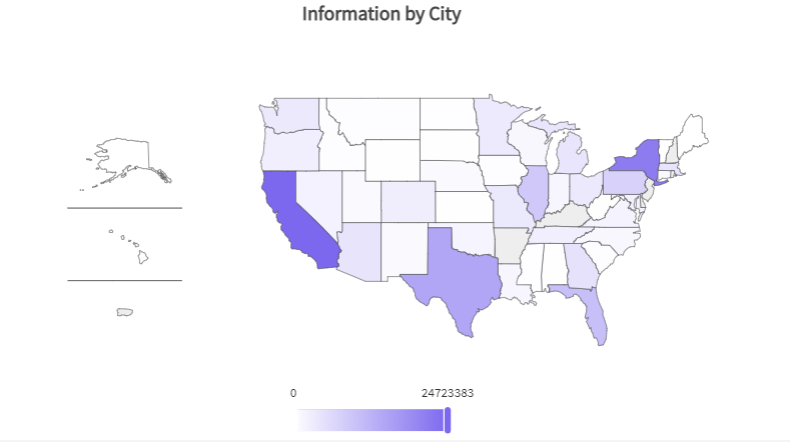

Maps in QueryViewer
In some situations, it is necessary to represent geographic locations such as countries, cities, etc.
As from GeneXus 17 upgrade 4, this data can be represented on maps in the QueryViewer control.
For example, look at the image below. It represents the total number of SARS-CoV-2 (Covid-19) cases per million people in each country.
In this case, a Choropleth type map is used.
Now, look at this other map below. It represents the total number of deaths per million in each country.
In this case, the data is represented in a Bubble type map.
How is it done with GeneXus?
For a query to be displayed on a map, in the Query object you need to define an attribute containing the ISO 3166-1 or ISO 3166-2 codes, depending on the geographic entities to be represented (if you want to use geographic coordinates instead, see below). For this attribute, its Type property must be set to Axis.
In addition, it is necessary to add another attribute with the numerical data related to the geographic entity. In this case, it is CountryCasesPerMillion. The Type property of the Query element must be set to Datum.
Additionally, you can choose the color of the data represented on the map. You can do this by setting the ForeColor property of the attribute whose type is Datum. Note that if no color is selected, a default color will be assigned.
Take a look at the following example. To represent specific colors for the different data values on the map, you can configure them in the Conditional styles property.
In this case, the Conditional styles property is configured as follows:
You can define this type of output using the QueryViewer control. To this end, the QueryViewer control (inserted in a web form) must have the Type property set to Map.

In the Map Type property, select the map you want to use (Choropleth or Bubble).
In the Region property, set the type of map in which you want to represent the data (World, Continent, or Country).

Note that if you select the Country property or Continent property, the maps available for each option will be displayed.
The map type can also be configured programmatically through the enumerated domains QueryViewerMapType, QueryViewerCountry, QueryViewerRegion, and QueryViewerContinent.
Take a look at the following example. To represent the total vaccinated population per department per country, with a combo box to select the country and the type of map, you need to set it as follows:
In this case, the enumerated domains used were QueryViewerRegion (to set the Region property to Country), QueryViewerCountry (to set the Country property to an initial value), and QueryViewerMapType (to change the MapType setting in Choropleth and Bubble).

Look at the following image. Changing the combo box options to another country and another type of map:
Using geographic coordinates
Since GeneXus 17 upgrade 7, it is possible to use GeoPoint attributes to place bubbles in a Bubble map at an exact coordinate (cities are a good example of this). The map below represents the total population of each capital city in Uruguay.
Since GeneXus 17 Upgrade 8, it is possible to use GeoPoint attributes in a Choropleth map, adding the value of the points belonging to each region and reflecting the total value of the points that belong to each region of the map. The bubble map below represents the population by city in the United States of America.
Now, look at this choropleth map below. The query and data are the same as in the previous case.

The advantage of using attributes of the GeoPoint type with Bubble and Choropleth maps is that with Bubble maps you can view detailed information; in this case, the population of each city in the United States of America. On the other hand, in Choropleth maps with GeoPoint data type, you can see the information at the highest level by region.
In both cases, within the query, you can also define parameters based on a GeoPoint attribute or filter expressions containing "=" or "<>" comparisons or any of the following methods supported by the data type: IsEmpty(), IsNull(), FromWKT(), ToWKT() and Distance().
This feature is supported only in the following DMBS: SQLServer, MySQL, Oracle, and PostgreSQL.
Considerations
1. The library used is ECharts.
2. GeneXus provides the following country maps:
- Argentina
- Brazil
- Chile
- China
- Japan
- Mexico
- Paraguay
- Spain
- United States of America
- Uruguay
Only these country maps are supported and ready to use in QueryViewer (with all the ISO 3166-2 codes set for their main territorial divisions). This means that if you want to use a map that is not listed above, you must download and add the ISO 3166-2 codes in the relevant subdivisions of the map you want to use.
GeneXus provides a GitHub repository with the rest of the maps. If you want to use one of them it take a look in How to use maps that are not provided by QueryViewer
3. The following continent maps are available:
- Africa
- Antarctica
- Asia
- Europe
- North America
- Oceania
- South America.
In addition, the World map is offered.
Availability
This feature is available since GeneXus 17 upgrade 4.
Videos
| Backlinks | ||
| GeneXus 17 upgrade 4 | GeneXus 17 upgrade 7 | How to use maps that are not provided by QueryViewer |
| ItemClick Event | Toc:Reporting in GeneXus |